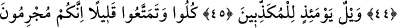

KUR’AN’DAN SONRA
HANGİ SÖZE İNANACAKLAR
41. Şüphesiz (o gün) takvâ sâhipleri, gölgeliklerde ve pınar başlarında,
42. Canlarının çektiğinden çeşit çeşit meyveler arasında olacaklardır.
43. (Kendilerine:) «İşlediklerinizin karşılığı olarak şimdi âfiyetle yeyin için»
(denir).
44. İşte, biz iyilik yapanları böyle mükâfatlandırırız.
45. O gün, (hakîkatleri) yalan sayanların vay hâline!
46. (Ey inkârcılar!) Yiyiniz, (dünyadan) faydalanınız biraz! Gerçek şu ki, sizler
suçlusunuz!
47. O gün, (hakîkatleri) yalan sayanların vay hâline!
48. Onlar, kendilerine: «Allah’ın huzûrunda eğilin!» denildiği vakit eğilmezler.
49. O gün, (hakîkatleri) yalan sayanların vay hâline!
50. Onlar artık bundan (Kur’an’dan) sonra hangi söze inanacaklar.
“Şüphesiz” inkâr ve yalanlamadan sakınan “takvâ sâhipleri gölgelerde ve”
kendilerinden susuzluğu gideren tatlı “pınarların başlarındadırlar.”
Yukarda âyeti tefsir ederken inkârdan sonra “yalanlama” kelimesini de katmış olduk.
Bu anlamı bundan önceki âyette geçen “yalan sayanlar” kelimesine gelmesinden
çıkarıyoruz. Âyet-i kerîme bu hâliyle amelden söz etmediği için âdeta “amel etmeyen
müslüman olamaz” diyen Mu’tezile mezhebine cevap mâhiyetindedir.
İşte bu müttakiler kendilerini gerçek anlamda gölgeleyen mükemmel bir gölge altında
olacaklardır. Bu gölgenin “mükemmel” olduğunu, ifâdesinin mutlak getirilmiş
olmasından çıkarıyoruz. Bir başka ifâdeyle; muttakilerin altında duracakları gölge,
yalanlayıcıların gölgeleri gibi olmayacaktır.
Bâzı âlimler bu âyet-i kerîmeyi tefsir ederlerken şöyle demişlerdir: Zâhiren
anlaşıldığına göre burada müttakilerin kendi bahçelerindeki meyva ağaçlarının altında
olacakları anlaşılmaktadır.